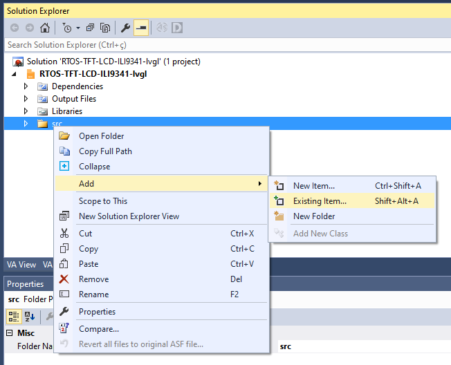
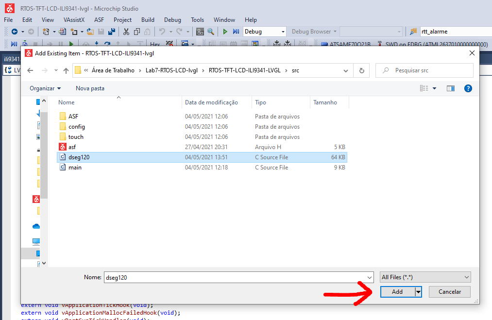

Lab - Parte 2
Info
Não podemos esquecer nossa referencia!

Vamos implementar os itens que são apenas "Labels (a)": Temperatura atual, relório, set-point. Mas antes será preciso escolhermos a fonte que iremos usar na interface, o lvgl possui algumas fontes disponíveis por padrão, mas nem sempre atendem a necessidade da interface. As fontes padrões do LVGL estão no link a seguir:
Info
Lembre que para usar as fontes padrões do LVGL é necessário editar o arquivo: config/lv_conf.h
Para a interface proposta sugiro usarmos a fonte DSEG (open source) e que lembra um display de sete segmentos:
https://github.com/keshikan/DSEG

Floor Temp
Vamos agora implementar o label da temperatura atual do piso, e iremos seguir os passos a seguir:
- Converter fonte para uso no lvgl
- Adicionar no lvgl/ Microchip studio
- Criando label e usando fonte
1. Convertendo
Com a fonte escolhida precisamos agora converter para o formato que o LVGL consegue interpretar (bitmap), para isso usaremos a ferramenta online do LVGL. Acesse o site:
Vamos criar uma fonte de tamanho 70 -> DSEG7-Modern/DSEG7Modern-Regular.ttf, esse arquivo será usada no site e foi extraído na etapa anterior. Configure a interface como no exemplo a seguir:
- Name:
dseg70 - Size:
70 - Bpp:
1 bit-per-pixel - TTF:
DSEG7-Modern/DSEG7Modern-Regular.ttf - Symbols:
-./0123456789 :(o espaço é necessário pq ele é um caráter)
Symbols
A fonte gerada terá somente esses símbolos, se você quiser usar por exemplo a letra C não vai poder. Gerar somente os símbolos que vai usar é importante porque o uC possui pouca memória e não seria possível ter várias fontes diferentes com todos os símbolos.
O site irá gerar um arquivo dseg70.c salve o mesmo dentro da pasta src/ do projeto (a mesma que contém o arquivo main.c) que estamos trabalhando.
2. Adicionando no Microchip Studio
Agora é necessário adicionar o arquivo ao MS:
- Clique com o botão direito em src e clique em Add > Existing Item...
- Encontre o arquivo dseg120.c que foi baixado e clique em Add
- Verifique se o arquivo dseg120.c foi adicionado



Info
O exemplo foi feito para a fonte de tamanho 120, mas depois resolvemos trocar por uma menor, note que onde na imagem tem dseg120 você deve colocar a dseg70.
3. Criando label e usando fonte
Agora podemos utilizar a nova fonte no nosso projeto, ainda dentro da lv_termostato vamos criar um novo label que irá exibir o valor da temperatura atual. Fazemos isso similar ao botão, porém agora iremos associar o label a tela e não ao botão e também iremos customizar a fonte para usarmos o dseg70.
Crei a variável global que irá apontar para o label:
lv_obj_t * labelFloor;
E então modifique a função termostato:
void lv_termostato(void){
// ....
// ....
labelFloor = lv_label_create(lv_scr_act());
lv_obj_align(labelFloor, LV_ALIGN_LEFT_MID, 35 , -45);
lv_obj_set_style_text_font(labelFloor, &dseg70, LV_STATE_DEFAULT);
lv_obj_set_style_text_color(labelFloor, lv_color_white(), LV_STATE_DEFAULT);
lv_label_set_text_fmt(labelFloor, "%02d", 23);
}
Para usarmos a fonte devemos indicar ao LVGL que a fonte existe, para isso adicione a linha a seguir no topo (após os #include) do arquivo main.c:
LV_FONT_DECLARE(dseg70);
Antes de continuar temos que editar o começo arquivo da fonte dseg70, incluindo o define a seguir:
+#define LV_LVGL_H_INCLUDE_SIMPLE
#ifdef LV_LVGL_H_INCLUDE_SIMPLE
#include "lvgl.h"
#else
#include "lvgl/lvgl.h"
#endif

Info
Notem que nós criamos um label e então customizamos algumas propriedades dele. O jeito feito neste exemplo é diferente do que fizemos com o botão na qual criamos um estilo novo e aplicamos a ele. Vocês podem escolher qualquer um dos dois jeitos para modificar um objeto.
Demais labels
Agora vocês precisam criar os outros dois labels: Relógio e Temperatura configurada, para isso será necessário gerar outras duas fontes de tamanhos diferentes e criar os labels.

Handlers
Até agora estávamos apenas criando a interface no LCD, agora precisamos adicionar inteligência a ela. Isso será feito pelos callbacks dos botões. Vamos focar apenas nos botões UP e DOWN que configuram a temperatura de referência (da direita).
Vamos implementar o código para o up_handler, callback do botão de aumento de temperatura.
Info
Eu dei o nome de up_handler você pode ter dado outro nome, precisa ficar atento a isso.
up_handler
Existem várias maneiras de fazermos com que o handler altera o valor do label, eu sugiro o código a seguir:
static void up_handler(lv_event_t * e) {
lv_event_code_t code = lv_event_get_code(e);
char *c;
int temp;
if(code == LV_EVENT_CLICKED) {
c = lv_label_get_text(labelSetValue);
temp = atoi(c);
lv_label_set_text_fmt(labelSetValue, "%02d", temp + 1);
}
}
Info
A vantagem da implementação sugerida é que não precisamos de uma variável global para armazenar o valor da temperatura, nós recuperamos o valor lendo o que estava salvo no label e convertendo para inteiro.
down_handler
Agora implemente a ação do botão down.
relógio
Temos um relógio na interface, vamos fazer ele funcionar? Para isso terão que incluir o RTC no projeto e fazer uso dele.
Extras
Temos muito o que fazer na interface, vou sugerir algumas coisas que irão dar nota a mais para vocês neste lab, cada item é meio conceito a mais.
- Implementar o digito da Temperatura: 23 .4
- Dica: use uma das fontes menores para isso
- O botão de
settingsdeve possibilitar o usuário configurar a hora certa (usando as setas v e ^). - Incluir demais labels e logos
- Gerar um logo para o relógio e usar no lugar do de
settings - Implementar o botão de
Powerque desliga a tela - Colocar um potenciômetro que altera o valor da temperatura atual.
Preencher ao finalizar o lab